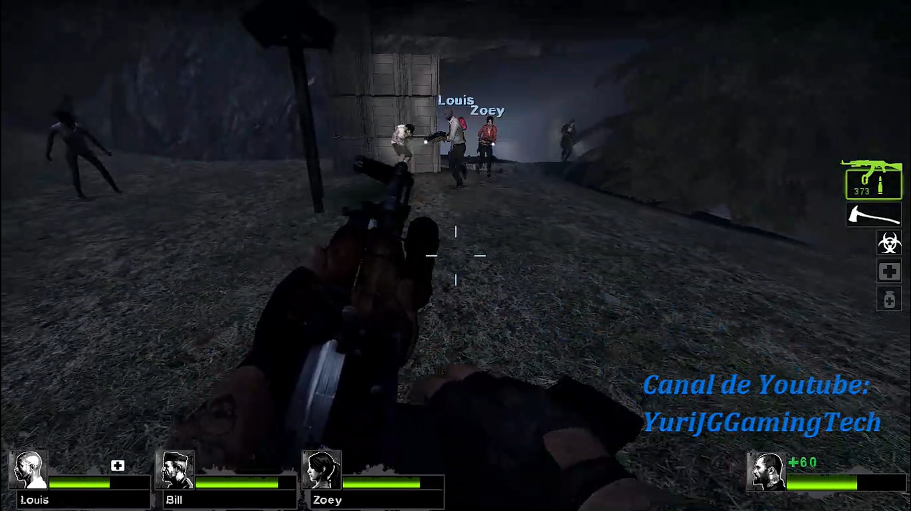

Descarga mapa Bloody Sunday 2 para left 4
dead 2


"Bloody Sunday 2" es un mapa personalizado creado para Left 4 Dead 2, diseñado para ofrecer una experiencia de supervivencia intensa y desafiante. Inspirado en un escenario urbano postapocalíptico, el mapa se sitúa en un ambiente de ciudad devastada por el brote zombie.Características principales:
Escenarios urbanos devastados: El mapa se desarrolla en una ciudad en ruinas, con calles destruidas, edificios colapsados y vehículos abandonados. Las áreas están llenas de escombros, lo que aumenta la dificultad del desplazamiento.
Diseño intrincado de combate: El mapa incluye muchas zonas estrechas, como callejones, túneles y espacios cerrados, lo que intensifica la lucha cuerpo a cuerpo y el uso de armas de corto alcance.
Estrategia de supervivencia: El mapa es conocido por tener un ritmo de oleadas constantes, donde los jugadores deben mantener la calma y planear sus defensas en puntos clave, como edificios con buenas vistas o barricadas naturales.
Ambiente sombrío: Utiliza una atmósfera oscura y opresiva, con iluminación tenue, lo que aumenta la tensión y la necesidad de estar siempre alerta ante ataques sorpresa de infectados.
Modo de juego:El objetivo en este mapa es sobrevivir el mayor tiempo posible frente a oleadas interminables de infectados especiales y comunes, lo que lo convierte en una opción popular para el modo Survival de Left 4 Dead 2.
No hecho para jugar con bots...
Hacer click debajo:
 DESCARGA mapa Bloody Sunday 2